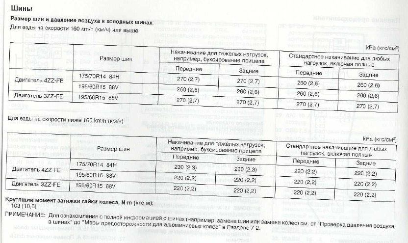

Согласно технической документации, для исполнения 4ZZ-FE используются следующие шины:
175/70 R14 84H
195/60 R15 88V
Почему-то во многих интернет-источниках указывают 195/50 R15. Надо разбираться дальше.
Тип шин для 4ZZ-FE не зависит от скорости. Однако для скоростей ниже 160 Км/ч, шины надуваются на более низкое давление (на ~50 кПа меньше, чем для езды со скоростью более 160 Км/ч).
Для стандартных нагрузок, включая полные, при двигателе 4ZZ-FE, для скорости до 160 Км/ч, передние и задние шины должны накачиваться на 220 кПа.
Выдержка из руководства пользователя Toyota Corolla E120:
